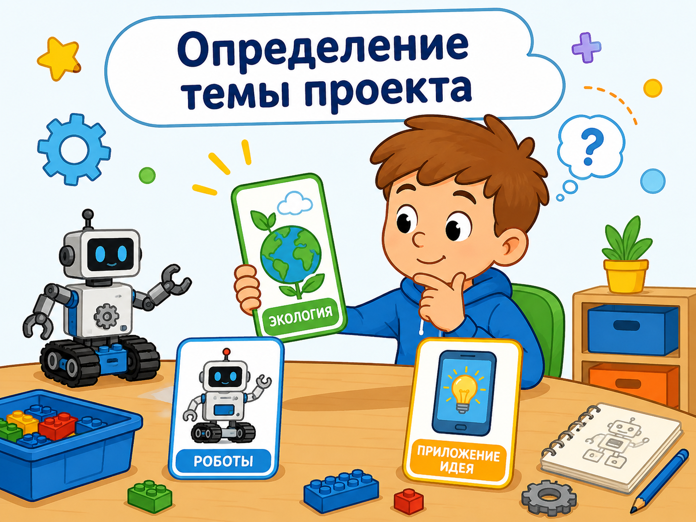
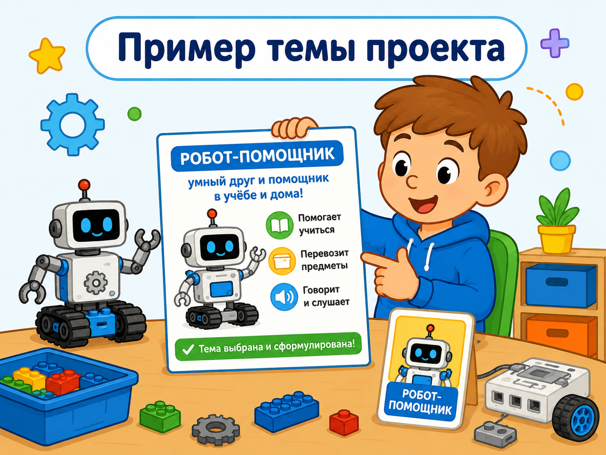
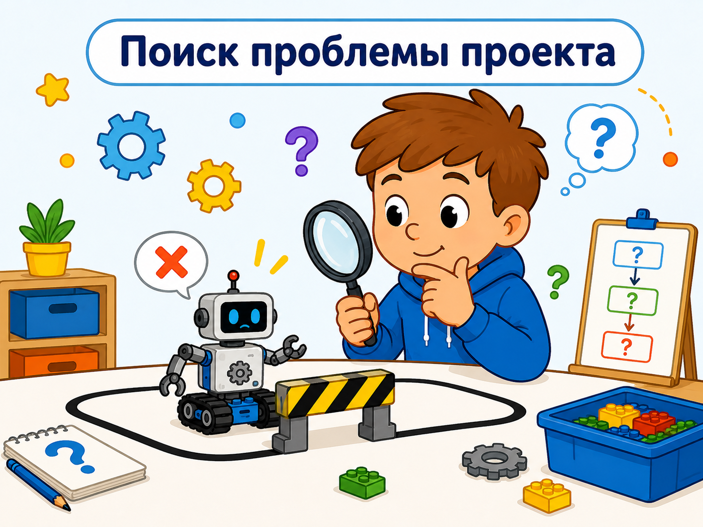

Рекомендации по определению темы, цели, задач и проблемы проекта
Теоретический блок
Зачем нужно правильно определять тему, цель, задачи и проблему
Перед началом проекта или исследования важно понять, о чём будет работа, какую проблему она решает, какой результат нужно получить и какие шаги необходимо выполнить для достижения цели.
Если тема выбрана слишком широко, проект становится сложным и непонятным. Если цель сформулирована неточно, трудно определить, что именно должно получиться в конце работы. Если задачи не связаны с целью, работа может потерять логическую структуру.
Поэтому на начальном этапе необходимо последовательно определить четыре основных элемента: тему, проблему, цель и задачи. Эти элементы помогают сделать проект понятным, логичным и завершённым.
Проблема
Сначала нужно понять, какое затруднение или вопрос требует решения. Проблема объясняет, зачем нужен проект.
Тема
После определения проблемы формулируется тема. Она показывает, о чём будет проект или исследование.
Цель
Цель показывает, какой главный результат должен быть получен в конце работы.
Задачи
Задачи раскрывают, какие конкретные действия нужно выполнить, чтобы достичь цели.
Результат
Результат показывает, что получилось после выполнения проекта: сайт, программа, модель, памятка или исследовательский вывод.
Связь элементов
Важно проверить, чтобы проблема, тема, цель, задачи и результат были логически связаны между собой.
Основные понятия
О чём будет работа
Тема показывает основное направление проекта или исследования. Она должна быть понятной, конкретной и соответствовать содержанию работы.
Что требует решения
Проблема — это затруднение, противоречие или недостаток, который нужно изучить или решить в ходе проекта.
Что нужно получить
Цель — это главный ожидаемый результат проекта. Она отвечает на вопрос: что должно быть сделано в конце работы?
Какие шаги выполнить
Задачи — это конкретные действия, которые необходимо выполнить, чтобы достичь поставленной цели.
Как определить тему проекта
Тема проекта должна быть связана с интересами обучающегося, учебной областью и практической значимостью работы. Хорошая тема не должна быть слишком общей. Она должна показывать, что именно будет изучаться или разрабатываться.

Выберите направление
Сначала нужно понять, к какой области относится будущий проект: робототехника, программирование, экология, образование, техника или другая тема.

Найдите проблему
Тема должна быть связана с реальной проблемой или вопросом, который требует изучения, объяснения или решения.

Сформулируйте тему
После выбора направления и проблемы нужно записать тему так, чтобы она была конкретной и понятной.
Пример
Слишком широкая тема: «Роботы». Более точная тема: «Разработка модели робота LEGO MINDSTORMS EV3 для движения по линии». Во втором варианте понятно, какой объект используется и что именно будет выполнять робот.
Как определить проблему проекта или исследования
Проблема показывает, зачем вообще нужна работа. Она отвечает на вопрос: какое затруднение существует и почему его важно решить?
Проблема может быть связана с недостатком знаний, отсутствием удобного инструмента, сложностью выполнения какого-либо действия, необходимостью улучшения процесса или созданием нового продукта.
Как отличить тему от проблемы
| Элемент | На какой вопрос отвечает | Пример |
|---|---|---|
| Тема | О чём будет проект? | Создание обучающего сайта по робототехнике |
| Проблема | Что нужно решить? | Обучающимся трудно самостоятельно повторять материал без наглядных инструкций |
| Цель | Что нужно получить? | Разработать электронный образовательный ресурс по робототехнике |
| Задачи | Что нужно сделать по шагам? | Изучить материалы, разработать структуру, подготовить задания, создать страницы сайта |
Как сформулировать цель
Цель должна быть связана с темой и проблемой. Она показывает, какой главный результат должен быть достигнут. Обычно цель формулируется с помощью глаголов: разработать, создать, изучить, проанализировать, сравнить, выявить.
Формула цели
Цель = глагол действия + объект работы + назначение результата.
Как выбрать глагол для цели
| Глагол | Когда использовать | Пример |
|---|---|---|
| Разработать | Если в результате создаётся продукт | Разработать обучающий сайт по робототехнике |
| Создать | Если нужно получить готовый материал или проект | Создать интерактивный проект в Scratch |
| Изучить | Если работа направлена на исследование явления или процесса | Изучить возможности конструктора LEGO MINDSTORMS EV3 |
| Проанализировать | Если нужно рассмотреть материалы, подходы или решения | Проанализировать учебные материалы по робототехнике |
| Сравнить | Если нужно сопоставить несколько объектов | Сравнить разные способы программирования робота |
Пример цели
Цель проекта — разработать электронный образовательный ресурс для поддержки обучения робототехнике с использованием LEGO MINDSTORMS EV3.
Как сформулировать задачи
Задачи раскрывают путь к достижению цели. Если цель отвечает на вопрос «что нужно получить?», то задачи отвечают на вопрос «что нужно сделать для достижения цели?».
Задачи должны быть конкретными, последовательными и связанными с содержанием работы. Обычно каждая задача соответствует отдельному этапу проекта.
Изучить
Сначала изучают теоретические материалы, понятия, источники и особенности выбранной темы.
Проанализировать
Затем анализируют существующие материалы, примеры, подходы или похожие решения.
Определить
После анализа определяют структуру проекта, требования, содержание или основные этапы работы.
Разработать
На этом этапе разрабатывают материалы, задания, структуру, макет, алгоритм или содержание проекта.
Создать
Затем создают итоговый продукт: сайт, страницу, программу, модель, инструкцию или исследовательский материал.
Проверить
В конце проверяют, работает ли результат и соответствует ли он поставленной цели.
Примеры формулировок задач
| Глагол | Когда использовать | Пример задачи |
|---|---|---|
| Изучить | Когда нужно познакомиться с теорией | Изучить особенности использования LEGO MINDSTORMS EV3 в обучении |
| Проанализировать | Когда нужно рассмотреть материалы или подходы | Проанализировать учебно-методические материалы по робототехнике |
| Определить | Когда нужно выделить структуру или требования | Определить структуру электронного образовательного ресурса |
| Разработать | Когда создаётся содержание или решение | Разработать теоретические и практические материалы для занятий |
| Создать | Когда создаётся готовый продукт | Создать страницы сайта с учебными материалами и заданиями |
| Проверить | Когда нужно оценить результат | Проверить работоспособность разработанного ресурса |
Типичные ошибки при формулировке
При подготовке проекта часто возникают ошибки, из-за которых работа становится менее понятной. Чтобы избежать этого, важно проверять связь между темой, проблемой, целью и задачами.
Тема слишком широкая
Например, тема «Программирование» слишком общая. Лучше уточнить: «Создание проекта в Scratch с использованием костюмов и сцен».
Цель не связана с темой
Если тема про сайт, а цель про изучение роботов без создания ресурса, между элементами работы нет логической связи.
Задачи не ведут к цели
Каждая задача должна помогать достичь цели. Лишние задачи лучше убрать или заменить более подходящими.
Проверь себя: что сформулировано неправильно?
Нажмите на ситуацию, чтобы увидеть пояснение.
Тема слишком широкая. Нужно уточнить, что именно будет изучаться или разрабатываться, например: «Создание обучающего проекта в Scratch».
Цель сформулирована неточно. Нужно указать конкретный результат: разработать сайт, создать проект, провести исследование или сравнить объекты.
Это ошибка. Задачи должны показывать путь к достижению цели и быть связаны с содержанием проекта.
Практический блок
Практическая часть занятия направлена на то, чтобы обучающиеся научились выбирать тему проекта, выделять проблему, формулировать цель и составлять задачи.
Задание 1. Выбор направления проекта
Цель: определить общую область будущего проекта или исследования.
- Подумайте, какая область вам интересна.
- Запишите 3 возможных направления проекта.
- Выберите одно направление, которое кажется наиболее понятным.
- Объясните, почему именно это направление вы выбрали.
- Обсудите выбранное направление с преподавателем или одноклассниками.
Подсказка: направление может быть связано с робототехникой, Scratch, созданием сайта, учебным проектом, игрой, исследованием или решением бытовой проблемы.
Задание 2. Формулировка темы
Цель: научиться превращать общее направление в конкретную тему.
Сформулируйте тему проекта так, чтобы было понятно, что именно будет изучаться или разрабатываться.
- Запишите выбранное направление.
- Уточните объект проекта.
- Определите, что именно вы хотите сделать.
- Составьте черновой вариант темы.
- Проверьте, не слишком ли тема широкая.
- Запишите окончательный вариант темы.
Подсказка: хорошая тема содержит не только общее направление, но и конкретный результат или объект работы.
Задание 3. Определение проблемы
Цель: понять, какую проблему должен решить проект.
Определите, какое затруднение, недостаток или вопрос связан с выбранной темой.
- Запишите выбранную тему.
- Ответьте на вопрос: почему эта тема важна?
- Определите, кому может быть полезен результат проекта.
- Сформулируйте проблему одним или двумя предложениями.
- Проверьте, связана ли проблема с темой.
Подсказка: проблему можно начать словами: «Сложность заключается в том, что...», «Недостаточно...», «Возникает необходимость...».
Задание 4. Формулировка цели
Цель: научиться формулировать главный результат проекта.
Сформулируйте цель проекта так, чтобы она показывала, какой результат должен быть получен.
- Посмотрите на тему и проблему проекта.
- Определите, что должно получиться в конце работы.
- Выберите подходящий глагол: разработать, создать, изучить, сравнить.
- Запишите цель одним предложением.
- Проверьте, связана ли цель с темой.
- Проверьте, можно ли по цели понять итоговый результат.
Подсказка: цель удобно начинать так: «Цель проекта — разработать...», «Цель исследования — изучить...».
Задание 5. Формулировка задач
Цель: составить список действий, необходимых для достижения цели.
- Запишите цель проекта.
- Подумайте, какие шаги нужны для её достижения.
- Составьте список из 4–6 задач.
- Начинайте каждую задачу с глагола действия.
- Проверьте, связана ли каждая задача с целью.
- Расположите задачи в логической последовательности.
Подсказка: задачи можно начинать словами: изучить, проанализировать, определить, разработать, создать, проверить.
Задание 6. Проверка связности проекта
Цель: проверить, связаны ли между собой тема, проблема, цель и задачи.
- Прочитайте тему проекта.
- Проверьте, есть ли в ней конкретный объект или результат.
- Прочитайте проблему и проверьте, связана ли она с темой.
- Прочитайте цель и проверьте, можно ли по ней понять итог работы.
- Проверьте, ведут ли задачи к достижению цели.
- Исправьте неточные формулировки.
Подсказка: если хотя бы один элемент не связан с остальными, формулировки нужно уточнить.
Примеры формулировок
В этом разделе представлены примеры формулировок темы, проблемы, цели и задач для разных типов проектов.
Проект по робототехнике
Тема: Создание модели робота для движения по линии.
Цель: разработать и запрограммировать модель робота, способную двигаться по линии.
Проект в Scratch
Тема: Создание интерактивной истории в Scratch.
Цель: разработать проект с персонажами, сценами, костюмами и диалогами.
Учебный проект
Тема: Разработка памятки по безопасной работе за компьютером.
Цель: создать памятку с правилами безопасной работы за компьютером.
Исследование
Тема: Изучение влияния времени работы за компьютером на утомляемость.
Цель: изучить, как длительная работа за компьютером влияет на самочувствие обучающихся.
Вопросы для самопроверки
1. Что такое тема проекта?
Тема проекта — это основное направление работы, которое показывает, о чём будет проект или исследование.
2. Что такое проблема проекта?
Проблема проекта — это затруднение, недостаток или вопрос, который нужно изучить или решить в ходе работы.
3. Что такое цель проекта?
Цель проекта — это главный результат, который должен быть получен в конце работы.
4. Что такое задачи проекта?
Задачи проекта — это конкретные шаги, которые нужно выполнить для достижения цели.
5. Почему тема не должна быть слишком широкой?
Если тема слишком широкая, становится непонятно, что именно нужно изучать или разрабатывать. Работу сложнее выполнить и оценить.
6. Какими словами удобно начинать задачи?
Задачи удобно начинать словами: изучить, проанализировать, определить, разработать, создать, проверить.
7. Как проверить, правильно ли сформулирована цель?
Нужно проверить, понятно ли по цели, какой результат должен быть получен в конце работы, и связана ли цель с темой и проблемой.
8. Сколько задач обычно достаточно для учебного проекта?
Обычно достаточно 4–6 задач, расположенных в логической последовательности.
9. Что делать, если задачи не связаны с целью?
Такие задачи нужно изменить или убрать, потому что каждая задача должна помогать достижению цели.
10. Почему важно связывать тему, проблему, цель и задачи?
Если эти элементы связаны между собой, проект получается логичным, понятным и направленным на конкретный результат.